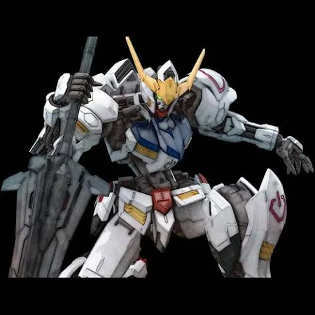

Master Grade (MG)
Master Grade is interesting because it combines a larger model with detailed construction. It is the grade I would explore when I want a project to enjoy over several building sessions.
What is Master Grade?
Master Grade Gundam kits generally use 1/100 scale. For the same mobile suit, this makes them larger than 1/144-scale models. Many MG kits include an internal frame with outer armor attached over it, although the construction and complexity vary between releases.
What I like about the MG 1/100 Gundam Barbatos is the idea of seeing the model come together section by section. I would choose a design I want to display, not simply buy a kit because it has a higher price or a more impressive grade name.
Where to buy? -> Premium Bandai.

How to approach the build
Your focus with an MG kit should be keeping a longer project organized. Divide the build into manageable sections and give each section enough attention instead of trying to finish the whole model at once.
- Keep the parts and runners organized between building sessions.
- Check each completed section against the instructions before moving on.
- Plan where to display the model before finishing the build.
These are personal suggestions rather than official requirements for this grade.
Back to the grade comparison · Share your building interests